Conseil & vente
Distributeur officiel des grandes marques. Nous vous guidons vers le matériel le plus adapté à vos besoins, avec l'expertise d'un spécialiste établi à Frasnes-lez-Anvaing.
 Concessionnaire officiel STIHL
Concessionnaire officiel STIHL

Passion & expertise depuis 1994
Vente, entretien et réparation de tondeuses, robots, tronçonneuses, débroussailleuses et taille-haies.
Du matériel performant et un suivi de qualité pour particuliers et professionnels.
Distributeur officiel des grandes marques. Nous vous guidons vers le matériel le plus adapté à vos besoins, avec l'expertise d'un spécialiste établi à Frasnes-lez-Anvaing.

Révision annuelle, affûtage des chaînes et des lames, dépannage toutes marques. Une expertise reconnue dans le Pays des Collines, la région de Tournai, Leuze et Ath.
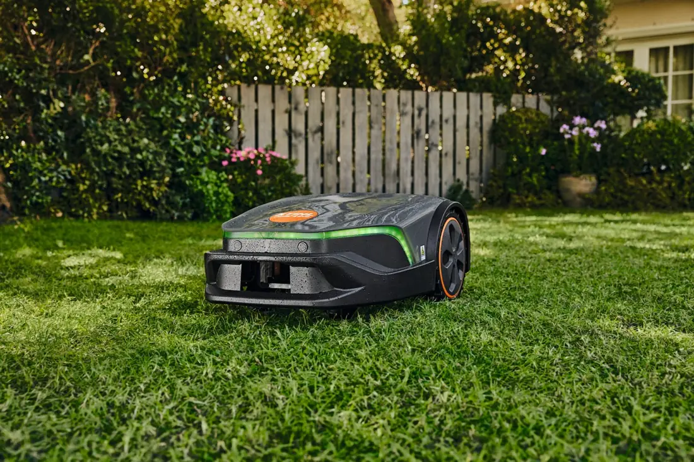
Installation certifiée à domicile, programmation et mise en route de votre robot tondeuse. Nous nous déplaçons dans la région des Collines et environs.
Retrouvez toutes les gammes de nos partenaires via leurs catalogues officiels.
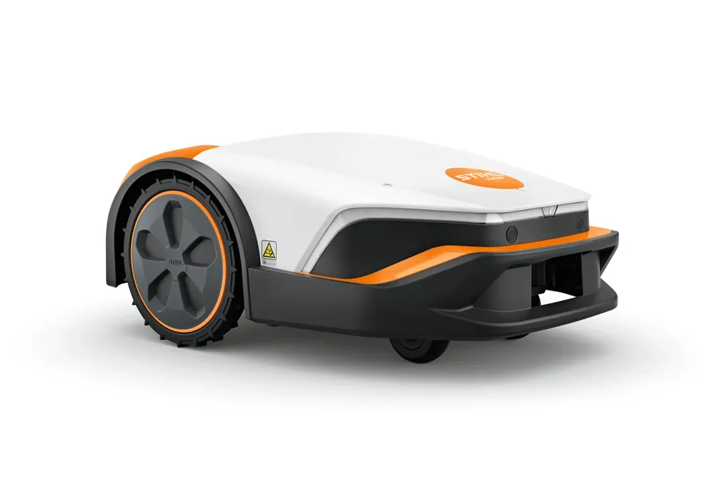
L'avenir de la pelouse. Du légendaire iMOW® aux technologies sans fil Sunseeker.
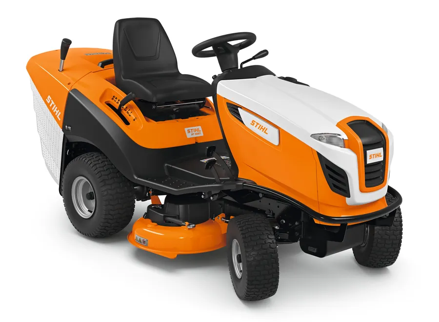
Pour les grandes surfaces. De la nouvelle gamme STIHL aux tracteurs ISEKI et zéro-turn FERRIS.

Tondeuses poussées ou tractées. Gammes complètes pour jardins de toutes tailles.
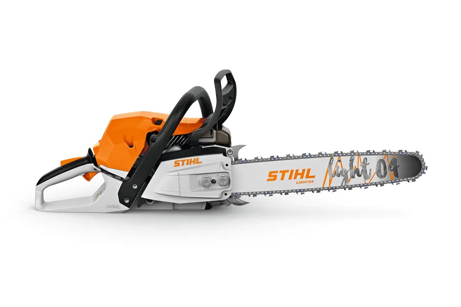
Abattage, ébranchage et bois de chauffage. La référence mondiale STIHL.

Domptez la végétation. Outils performants pour les finitions et les ronciers.

Souffleurs, nettoyeurs haute-pression et atomiseurs pour un extérieur impeccable.
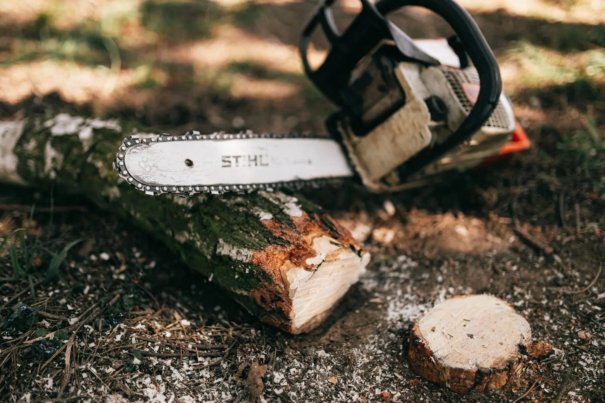
Thermique ou sur batterie, venez prendre en main la tronçonneuse STIHL adaptée à vos travaux. On vous conseille, on l'entretient et on affûte la chaîne.
Les offres STIHL du moment et nos conseils de saison pour un jardin impeccable.
 Batterie offerte
Batterie offerte
Achetez un set AS participant et recevez une batterie supplémentaire, compatible avec toutes les machines du système AS.
Période de l'action : du 01/09/2026 au 31/12/2026
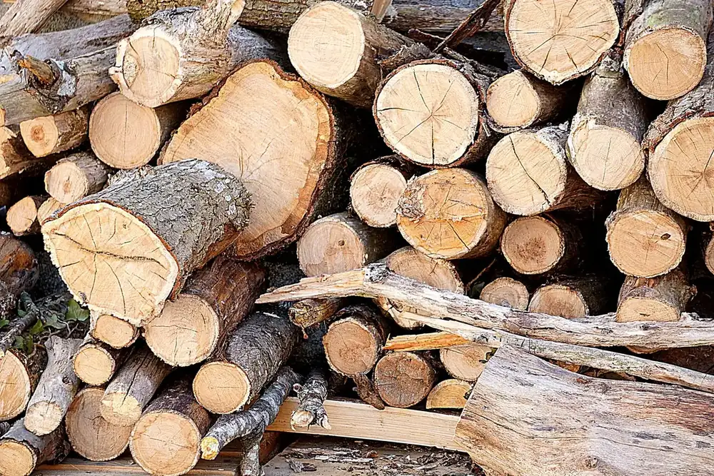
Révision d'hiverLa saison de tonte est terminée. Profitez de l'hiver pour faire réviser vos machines (tondeuses, robots, tracteurs) et leur assurer une longue vie.
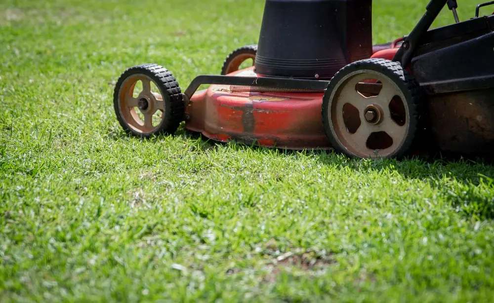
Remise en routeAvant de redémarrer la saison, faites contrôler votre tondeuse : une lame affûtée et un moteur entretenu donnent une coupe nette et évitent les pannes.
Saison des haies
En été, la gestion de l'eau et la taille des haies sont cruciales. Gardez vos outils de coupe bien affûtés.
Des marques que nous vendons, installons et réparons nous-mêmes à l'atelier.
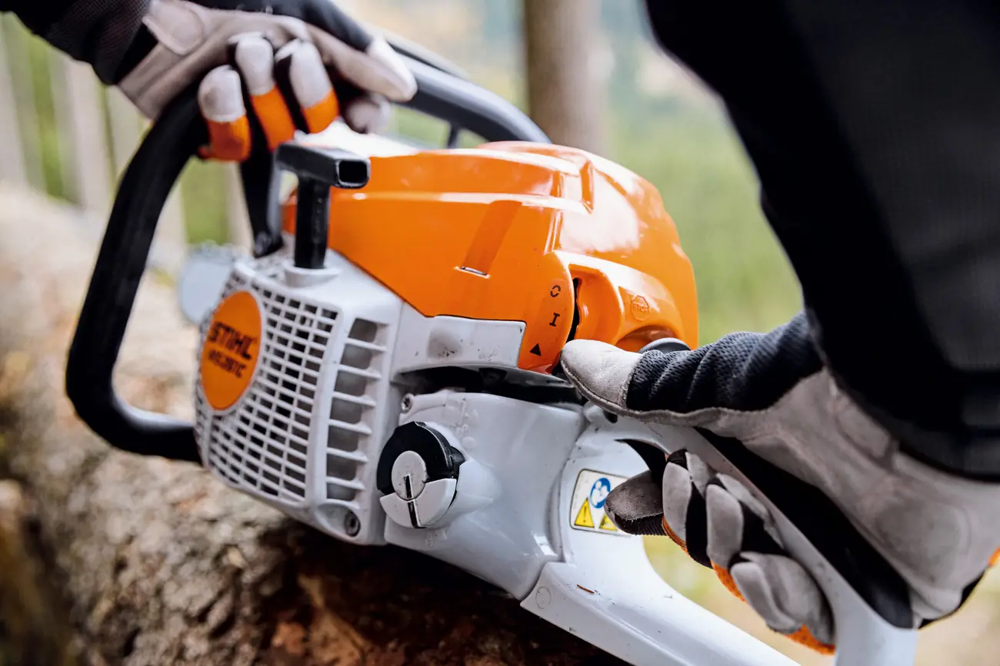
Toute la gamme STIHL en magasin, des robots iMOW aux tronçonneuses professionnelles, avec la mise en service et le service après-vente agréé.
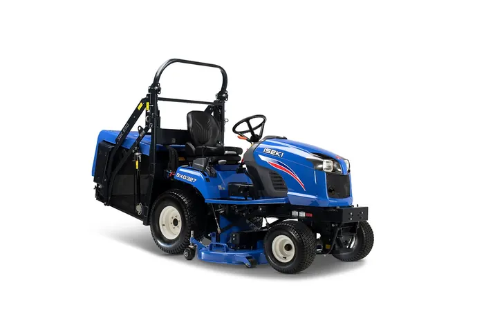
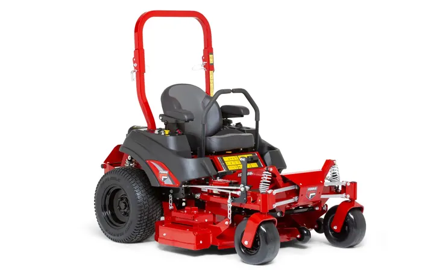
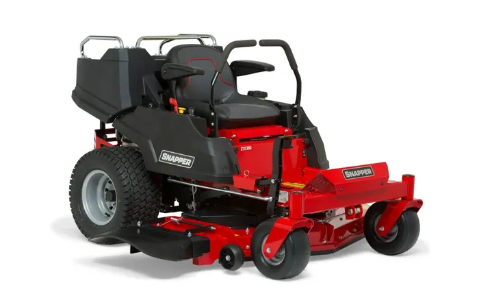
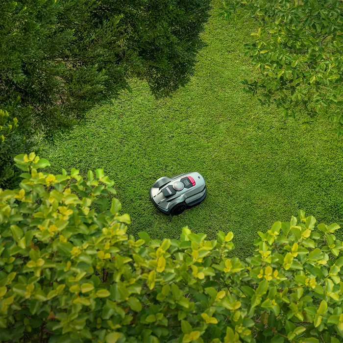
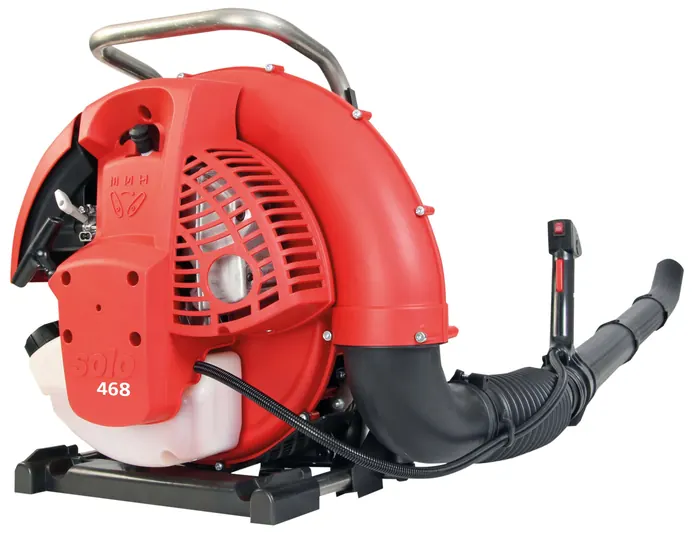
Une aventure familiale, de père en fils.
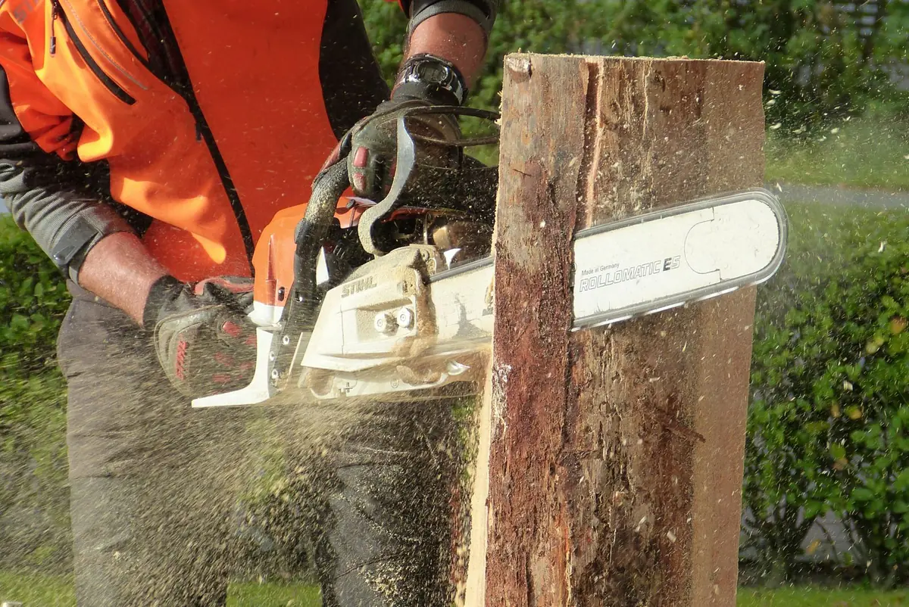
30+ ans de service dans le Pays des Collines
Tout a commencé simplement. Éric lance l'activité avec quelques marques reconnues. C'était le début d'une passion pour le service bien fait.
Une étape majeure pour l'entreprise : nous devenons concessionnaire officiel STIHL. L'assurance pour nos clients de bénéficier de produits de haute qualité et d'un service d'excellence.
L'atelier devenant trop restreint, nous construisons un entrepôt pour créer un espace plus grand et mieux équipé pour entretenir votre matériel.
Une nouvelle étape clé : Tanguy rejoint l'entreprise. Deux générations, deux visions, mais une seule priorité : votre satisfaction.
Réaménagement du showroom, robots connectés… On évolue avec notre temps, mais on garde notre esprit familial : ici, vous n'êtes pas un numéro.
Ils nous font confiance pour leur jardin.
« Très bon service, très réactif aux demandes des clients. Je recommande vivement !!! »
« Boutique efficace à l'ancienne. On y trouve le conseil qu'il manque dans les grandes surfaces. »
« Prend le temps d'expliquer et de donner quelques astuces d'utilisation. Très sympa. »
« Spécialiste STIHL avec un service clientèle excellent !!! »
« Très compétent et de bon conseil. »
« Étant client, service sérieux 👍👋 »
« Bonne accueil et très bon service. »
« Très bon service »
Partagez votre expérience et aidez-nous à nous améliorer : laisser un avis Google
Vous ne trouvez pas votre réponse ? Appelez-nous, on vous répond volontiers.
069 86 60 47Le choix idéal dépend de nombreux facteurs : la surface, mais aussi la pente, les obstacles et votre budget. Chaque jardin est unique !
Pour être sûr de choisir la machine parfaitement adaptée (électrique, thermique ou robot) et éviter les erreurs, nous vous invitons à passer directement au magasin. Nous analyserons avec vous la configuration de votre terrain pour vous guider vers le meilleur modèle.
Absolument. C'est notre spécialité ! L'installation comprend l'étude du terrain, l'installation (guidage GPS ou filaire), la programmation et la mise en route complète.
Pour garantir la longévité de votre machine, notre entretien annuel inclut :
Dans 90 % des cas, c'est un problème de carburant. L'essence sans plomb « moderne » (SP95/E10) se dégrade en quelques semaines et finit par boucher le carburateur.
Solution immédiate : une vidange du réservoir et un nettoyage du carburateur sont nécessaires en atelier.
Prévention : utilisez de l'essence alkylate (MotoMix) qui se conserve 3 à 5 ans, ou ajoutez un additif stabilisateur à votre essence.
Nous le déconseillons fortement pour les moteurs 2 temps et 4 temps de jardinage. L'éthanol présent dans l'essence de pompe dégrade les membranes des carburateurs lors de l'inactivité. Nous recommandons le carburant STIHL MotoMix (conservation 5 ans) pour garantir la longévité de votre machine.
N'hésitez pas à nous contacter par téléphone pour vérifier la faisabilité.
Tout à fait. Nous affûtons les chaînes de tronçonneuse, les lames de tondeuse et les taille-haies dans notre atelier.
Non, nous n'acceptons pas les éco-chèques.
Pour un usage particulier, la garantie légale est de 2 ans (1 an pour les professionnels). En utilisant exclusivement du carburant MotoMix dès l'achat d'une machine thermique STIHL, vous pouvez bénéficier d'extensions de garantie (voir conditions en magasin).
Passez au magasin à Anvaing, ou appelez-nous pour un conseil ou un rendez-vous à l'atelier.
Horaires ci-dessous
Expert en motoculture depuis plus de 30 ans. Conseil, vente et atelier de réparation agréé.
Adresse
67 Rue de la Gare
7910 Frasnes-lez-Anvaing
Téléphone
Horaires

Depuis 1994, l'établissement Van De Wiele est la référence en motoculture dans le Pays des Collines. Basé à Anvaing, notre magasin familial propose un vaste choix de machines pour l'entretien de vos espaces verts, incluant tracteurs, tondeuses, robots, tronçonneuses, débroussailleuses, taille-haies, souffleurs, scarificateurs, motoculteurs, etc.
Au-delà de la vente, nous nous distinguons par un atelier mécanique de proximité, idéalement situé pour les habitants de Frasnes-lez-Anvaing et ses villages voisins (Pecq, Ellezelles, Flobecq, Leuze, Moustier, Œudeghien, Cordes, Forest, Saint-Sauveur, Celles...). Que vous soyez un particulier cherchant un robot tondeuse installé clé en main, ou un pro de la région de Tournai ou d'Ath cherchant un SAV réactif pour son matériel de jardin, nous sommes là pour vous.